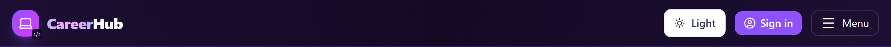
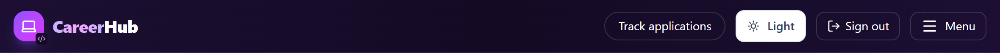
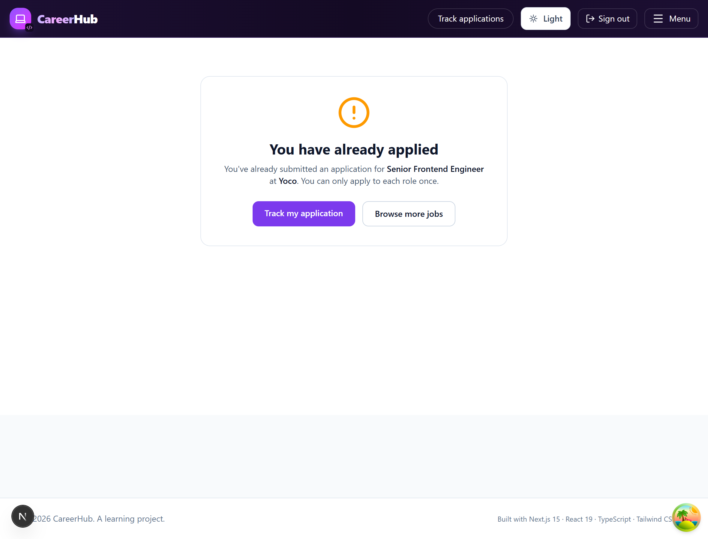
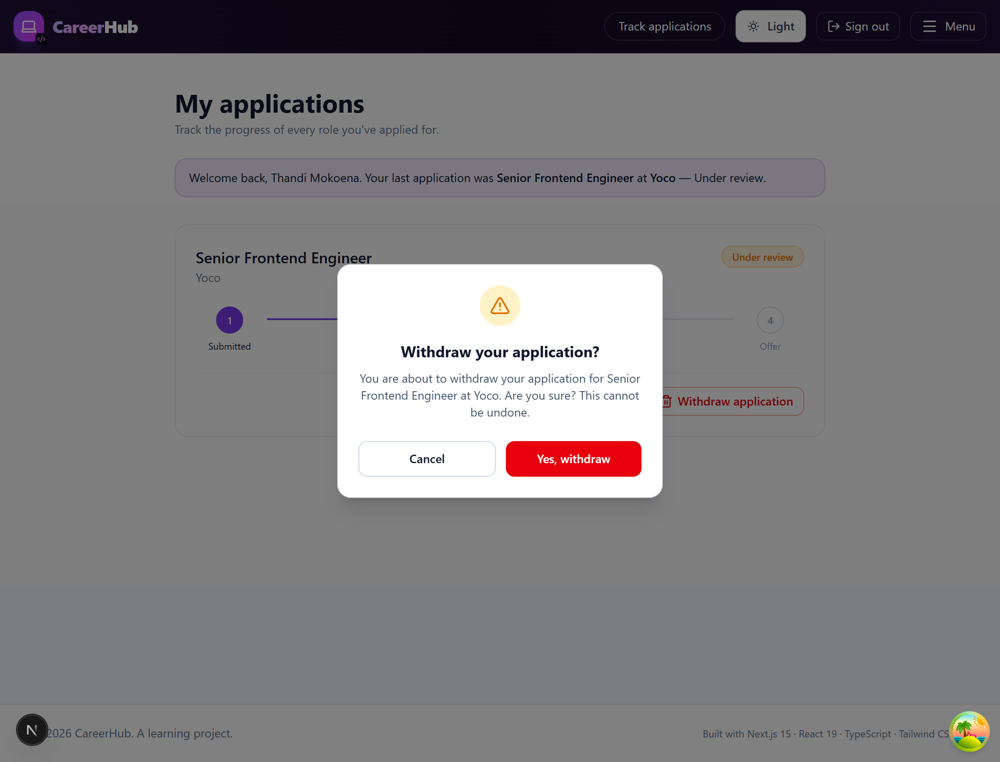
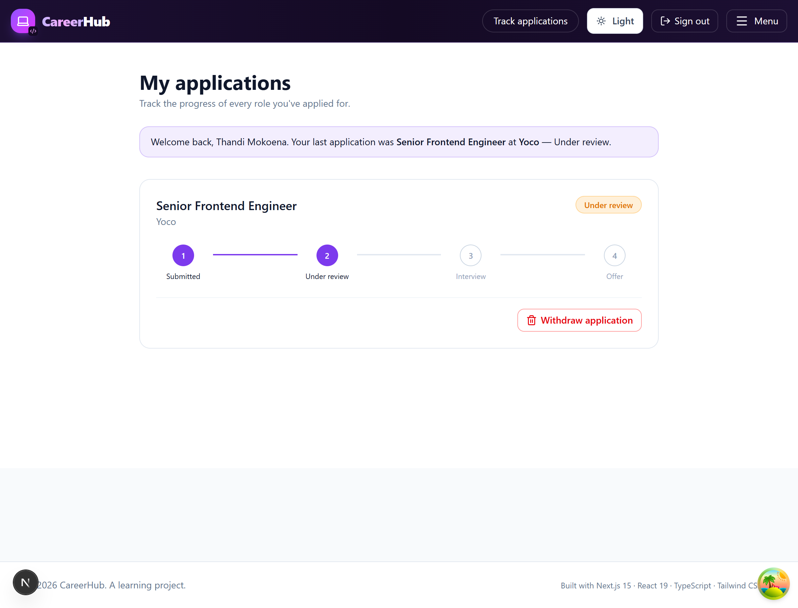
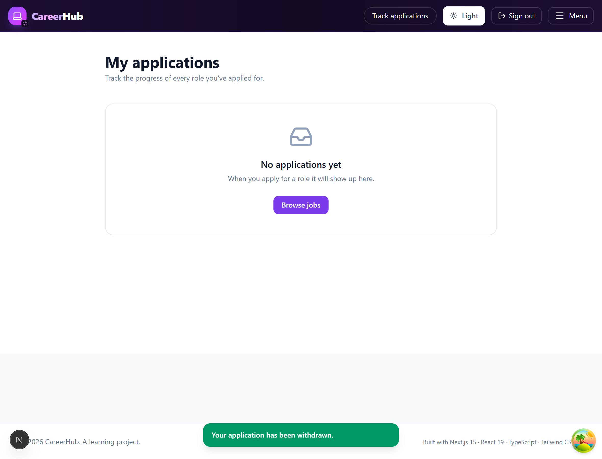

This update changes how the app behaves around applications. Here is the whole change set at a glance, and exactly which file in which folder does the work.
| # | Feature | File(s) changed | Folder |
|---|---|---|---|
| 1 | Hide "Track applications" until you sign in | Navbar.tsx | src/components |
| 2 | Stop the data layer storing a duplicate; tell who already applied | careerhub-store.ts (hasApplied) | src/lib |
| 3 | Show "You have already applied" instead of the form | apply/[jobId]/page.tsx | src/app |
| 4 | The "are you sure?" confirmation pop-up | ConfirmDialog.tsx NEW | src/components |
| 5 | Withdraw button + remove the application + toast | applications/page.tsx, careerhub-store.ts (withdrawApplication) | src/app, src/lib |
src/lib. The screens in
src/app and the reusable pieces in src/components just call those
functions and show the result. This is the same "separation of concerns" the main guide describes —
we did not break it while adding features.lib "hasApplied()?" → if yes, it
shows the "already applied" screen instead of saving.ConfirmDialog → confirming calls lib's
withdrawApplication() and shows a success toast from context.
Tracking applications only makes sense once you have an account. So the link is now shown only when a user is logged in, and hidden completely for visitors.


The navbar already knew who was logged in via useAuth(). We simply wrap the link in
a check: only render it when user exists. In React, {user && (…)}
means "draw this only if user is truthy".
// BEFORE — the link always rendered <Link href="/applications">Track applications</Link> // AFTER — only when signed in {user && ( <Link href="/applications" className="… sm:inline-block"> Track applications </Link> )}
The slide-out mobile menu had a second copy of the same link, so we wrapped that one in the
exact same {user && (…)} guard. Both the desktop bar and the mobile menu now agree.
user comes from AuthContext
(in src/context). The moment someone signs in or out, the navbar re-renders and the
link appears or disappears automatically — we did not have to write any extra "update" code.A person must not be able to apply to the same job twice. We enforce this in two layers: a rule in the data library, and a screen that shows the result.
We added a small function, hasApplied, that answers a yes/no question: has this
email already applied to this job id? It matches on both the job and the email (ignoring
capitalisation), so one account can't slip a duplicate through.
// NEW in src/lib/careerhub-store.ts export function hasApplied(jobId: string, email: string): boolean { const target = email.trim().toLowerCase(); return getApplications().some( (a) => a.jobId === jobId && a.email.toLowerCase() === target, ); }
.some(...) returns true as soon as it finds one matching
application, false if none match — exactly the yes/no we need.
The apply page now uses that rule in two places:
// 1) Early check when the page opens useEffect(() => { if (user && job && hasApplied(job.id, user.email)) { setAlreadyApplied(true); } }, [user, job]); // 2) The enforcement, inside handleSubmit, just before saving if (hasApplied(job!.id, email.trim())) { setAlreadyApplied(true); return; // stop here — never call saveApplication() }
When alreadyApplied is true, the page renders a friendly notice instead of
the form:

hasApplied() is true.We also added an AlertCircle icon (amber) so the message reads as a
gentle stop, not an error.
Withdrawing is permanent, so we never do it on a single click. We built a small, reusable confirmation dialog — a new component any part of the app can use for any "are you sure?" moment.

if (!open) return null),
so it never sits hidden in the page.| Prop | What it does |
|---|---|
open | Show the dialog (true) or render nothing (false) |
title / message | The heading and the question |
confirmLabel / cancelLabel | Button text (e.g. "Yes, withdraw") |
onConfirm | Function to run if the user confirms |
onCancel | Function to run if they back out |
// Heart of src/components/ConfirmDialog.tsx if (!open) return null; // closed = nothing in the DOM return ( <div role="dialog" aria-modal="true"> <div className="… bg-black/50" onClick={onCancel} /> {/* dim backdrop */} <div className="… card"> <AlertTriangle /> {/* the warning icon */} <h2>{title}</h2> <p>{message}</p> <button onClick={onCancel}>{cancelLabel}</button> <button onClick={onConfirm}>{confirmLabel}</button> {/* red */} </div> </div> );
onConfirm or onCancel. The
page that uses it decides what those mean. That is what makes it reusable.This is where the dialog, the data library and the toast all come together on the tracking page.
A second new function, withdrawApplication, deletes one application by its id: read
the full list, keep everything except the one being withdrawn, write the rest back.
// NEW in src/lib/careerhub-store.ts export function withdrawApplication(id: string): void { const remaining = getApplications().filter((a) => a.id !== id); write(APPS_KEY, remaining); // save the list without that record }
The tracking page now does four small things:
setPendingWithdraw(app) — which makes the dialog appear. Nothing is deleted yet.confirmWithdraw()
runs the removal, drops the card from the screen, and shows a toast.// The withdraw button on each card <button onClick={() => setPendingWithdraw(app)}> <Trash2 /> Withdraw application </button> // The one dialog for the whole page, driven by `pendingWithdraw` <ConfirmDialog open={pendingWithdraw !== null} title="Withdraw your application?" message={`You are about to withdraw your application for ${…}. Are you sure?`} confirmLabel="Yes, withdraw" onConfirm={confirmWithdraw} onCancel={() => setPendingWithdraw(null)} /> // Runs ONLY after the user confirms function confirmWithdraw() { withdrawApplication(pendingWithdraw.id); // 1. delete from storage setApps((cur) => cur.filter((a) => a.id !== pendingWithdraw.id)); // 2. update screen setPendingWithdraw(null); // 3. close dialog notify("Your application has been withdrawn.", "success"); // 4. toast }


src/app) handles the
clicks and the dialog; the actual delete is one call into src/lib; the toast comes
from src/context. Each folder keeps its single job.| File | Folder | Change |
|---|---|---|
ConfirmDialog.tsx NEW | src/components | Reusable "are you sure?" pop-up |
Navbar.tsx | src/components | Show "Track applications" only when signed in (2 spots) |
careerhub-store.ts | src/lib | Added hasApplied() and withdrawApplication() |
apply/[jobId]/page.tsx | src/app | Block duplicates; show "already applied" screen |
applications/page.tsx | src/app | Withdraw button, confirm dialog, success toast |
lib. Reusable UI lives in components. Screens live in
app. Shared messages/login live in context. Every feature here was
built by adding a small rule and letting a screen call it — never by tangling them together.
npm run dev and open http://localhost:3000.localStorage). When the real C# back-end arrives, only the insides of
hasApplied and withdrawApplication change to call the server — the
navbar, the apply page and the tracking page stay exactly as they are.— End of walkthrough —
CareerHub · new application features · 5 files, 1 new component